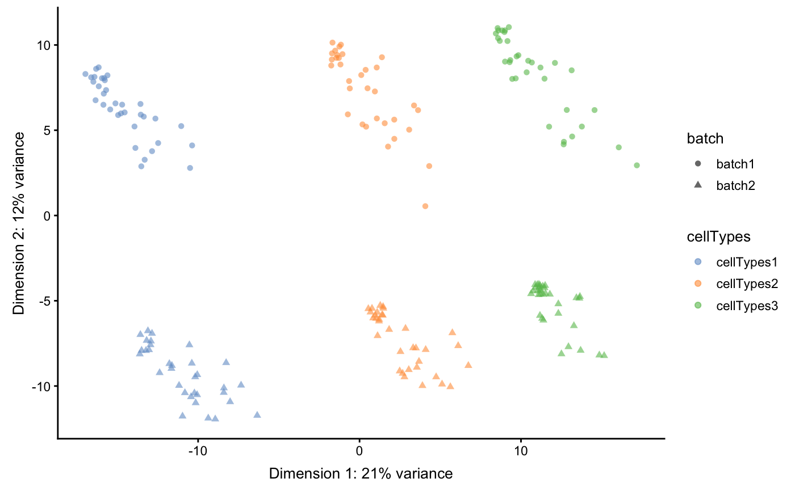
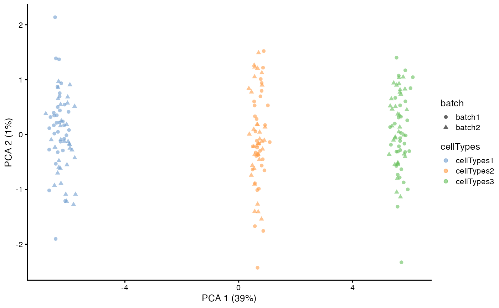

R/ruvSimulate.R
ruvSimulate.RdThis function is designed to generate Poisson-random-variable data matrix to test on the internal algorithms of scMerge. It does not represent real biological situations and it is not intended to be used by end-users.
ruvSimulate(m = 100, n = 5000, nc = floor(n/2), nCelltypes = 3, nBatch = 2, k = 20, lambda = 0.1, sce = FALSE)
| m | Number of observations |
|---|---|
| n | Number of features |
| nc | Number of negative controls |
| nCelltypes | Number of cell-types |
| nBatch | Number of batches |
| k | Number of unwanted factors in simulation |
| lambda | Rate parameter for random Poisson generation |
| sce | If |
If sce is FALSE, then the output is a list consists of
Y, expression matrix generated through Poisson random variables,
ctl, a logical vector indicating the control genes,
M, replicate mapping matrix,
cellTypes, a vector indicating simulated cell types
batch, a vector indicating simulated batches
if sce is TRUE, a SingleCellExperiment wrapper will be applied on all above simulated objects.
set.seed(1) L = ruvSimulate(m = 200, n = 1000, nc = 200, nCelltypes = 3, nBatch = 2, lambda = 0.1, k = 10, sce = TRUE) print(L)#> class: SingleCellExperiment #> dim: 1000 200 #> metadata(1): M #> assays(2): counts logcounts #> rownames(1000): gene1 gene2 ... gene999 gene1000 #> rowData names(0): #> colnames(200): cell1 cell2 ... cell199 cell200 #> colData names(2): cellTypes batch #> reducedDimNames(0): #> spikeNames(0):example <- scMerge(sce_combine = L, ctl = paste0('gene', 1:500), cell_type = L$cellTypes, ruvK = 10, assay_name = 'scMerge')#>#> Dimension of the replicates mapping matrix: #> [1] 200 101#>#>scater::plotPCA(L, colour_by = 'cellTypes', shape = 'batch', run_args = list(exprs_values = 'logcounts'))scater::plotPCA(example, colour_by = 'cellTypes', shape = 'batch', run_args = list(exprs_values = 'scMerge'))